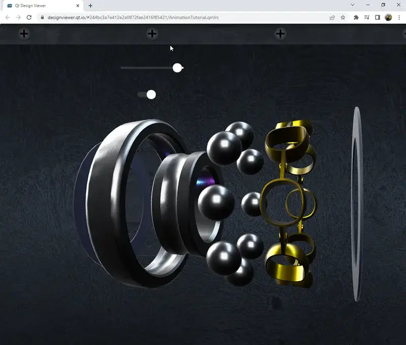
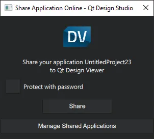
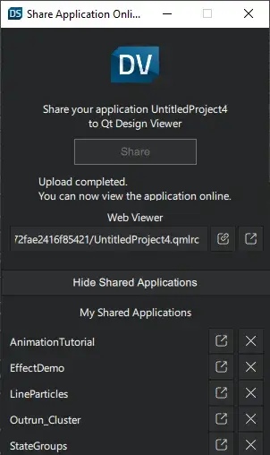

Sharing Applications Online

In Qt Design Studio, you can share your applications in most widely-used web browsers, such as Apple Safari, Google Chrome, Microsoft Edge, and Mozilla Firefox, on the desktop and on mobile devices.
The application shared online runs in Qt Design Viewer, which is a QML viewer that runs in your web browser.
The startup and compilation time depend on your browser and configuration. However, the actual performance of the application once started is indistinguishable from the same application running on the desktop.
The loaded applications remain locally in your browser. No data is uploaded into the cloud.
Sharing your Application Online
To share your Qt Design Studio application online:
- Open the application in Qt Design Studio.
- Select File > Share Application Online.
- Optionally, select Protect with password, and enter a password to prevent unauthorized viewing of the application.
Note: If you share the same application again, you must set the password again. Otherwise, the application is not password protected any longer.
- Select Share.

You can now open the application in a web browser, copy the link to share with others, or manage your shared applications.
